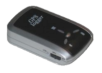

Transystem iBlue 747
Archivierte Anleitung
Dieser Artikel wurde archiviert, da er - oder Teile daraus - nur noch unter einer älteren Ubuntu-Version nutzbar ist. Diese Anleitung wird vom Wiki-Team weder auf Richtigkeit überprüft noch anderweitig gepflegt. Zusätzlich wurde der Artikel für weitere Änderungen gesperrt.
Zum Verständnis dieses Artikels sind folgende Seiten hilfreich:
Der i-Blue 747  der Firma Transystem ist ein GPS-Logger, der sich mittels USB-Kabel oder Bluetooth auch als GPS-Maus nutzen lässt.
der Firma Transystem ist ein GPS-Logger, der sich mittels USB-Kabel oder Bluetooth auch als GPS-Maus nutzen lässt.
Der Bluetooth GPS-4043 Datalogger der Firma Blumax ist baugleich mit dem Transystem i-Blue 747. Somit gilt diese Anleitung auch für den Blumax 4043! Die Nachfolgemodelle heißen i-Blue 747+ und Blumax 4044 und besitzen einen neuen MTK+ Chipsatz. Dieser funktioniert ab der Kernelversion 2.6.30
|  |
| i-Blue 747 |
Installation¶
Dem GPS-Logger liegen nur Treiber und Software für Windows bei. Mit dieser lassen sich die Tracks / Wegpunkte auslesen und das Gerät konfigurieren. Der benötigte Treiber CP210x ist bei Linux bereits im Kernel integriert und die mitgelieferte Software lässt sich problemlos unter Wine verwenden.
Die Installation der Software geschieht wie folgt:
Falls noch nicht geschehen, wird als erstes Wine installiert. Als nächstes wird der i-Blue an den USB-Port angeschlossen und der Schalter für den Betriebsmodus auf LOG gestellt. Um das Gerät im System zu finden, wird dann in einem Terminal [3] der Befehl
dmesg
aufgerufen. Das letzte Gerät in der Ausgabeliste ist vermutlich der i-Blue. Findet sich dort ein Ausdruck wie ttyUSB0, so heißt die Geräte-Datei /dev/ttyUSB0. Eine typische Ausgabe sieht etwa wie folgt aus:
[ 2579.875769] /build/buildd/linux-2.6.24/drivers/usb/serial/usb-serial.c: USB Serial support registered for cp2101 [ 2579.875835] cp2101 2-1:1.0: cp2101 converter detected [ 2579.958484] usb 2-1: reset full speed USB device using ohci_hcd and address 2 [ 2580.012628] usb 2-1: cp2101 converter now attached to ttyUSB0 [ 2580.012666] usbcore: registered new interface driver cp2101 [ 2580.012674] /build/buildd/linux-2.6.24/drivers/usb/serial/cp2101.c: Silicon Labs CP2101/CP2102 RS232 serial adaptor driver v0.07
Mit dieser Information wird dann ein COM-Port für Wine erstellt. Dazu werden im Terminal die beiden folgenden Befehle ausgeführt:
cd ~/.wine/dosdevices ln -s /dev/ttyUSB0 com1
Bei einigen Versionen der DataLog-Software wird mit großgeschriebenen Com-Devices gearbeitet. Daher muss auch der Link wie folgt erzeugt werden:
ln -s /dev/ttyUSB0 Com1
Nun kann das DataLog-Tool  heruntergeladen, entpackt [4] und durch Aufruf von
heruntergeladen, entpackt [4] und durch Aufruf von
wine DataLog.exe
auf dem Rechner installiert werden.
Nach Beendigung der Installation kann die Software ganz normal wie unter Windows genutzt [5] werden. Nach dem Programmaufruf wählt man den Port Com1 und die höchste BaudRate 115200 und klickt dann auf den Connect-Button.
BT747¶
BT747 bietet eine ansprechende Oberfläche für fast alles was man mit dem iBlue 747 (und Geräten mit MTK/MTK2-Chipsatz) machen kann Homepage. Neben dem Auslesen des Logs, konvertiert das Programm die Daten in verschiedene Formate, bietet Filterfunktionen. Ebenso ist das Programm zum Geotagging von Fotos geeignet. Mit Hilfe der ebenfalls angebotenen Version für Mobiltelefone und PDAs ist es auch unterwegs recht einfach POIs für OpenStreetMap zu erfassen. BT747 ist ein Java-Programm und benötigt OpenJava oder SunJava.
MTKBabel¶
Für die Konfiguration des i-Blue747 und zum Auslesen der Daten gibt es auch das Kommandozeilentool MTKBabel. Es läßt sich sehr einfach über die Paketverwaltung installieren und sollte auch mit anderen GPS-Loggern funktionieren, die den MTK-Chipsatz verwenden.
GPSBabel¶
GPSBabel ist eine Anwendung, die zur Konvertierung von GPS-Datenformaten in das jeweils benötigte eingesetzt wird. Es lassen sich damit eine Vielzahl von GPS-Chips auslesen und die Daten in verschiedenen Formaten speichern. Auch der iBlue kann mit gpsBabel ab der Version 1.3.5 ausgelesen werden; konfiguriert werden kann er hiermit nicht.


- Erstellt mit Inyoka
-
 2004 – 2017 ubuntuusers.de • Einige Rechte vorbehalten
2004 – 2017 ubuntuusers.de • Einige Rechte vorbehalten
Lizenz • Kontakt • Datenschutz • Impressum • Serverstatus -
Serverhousing gespendet von